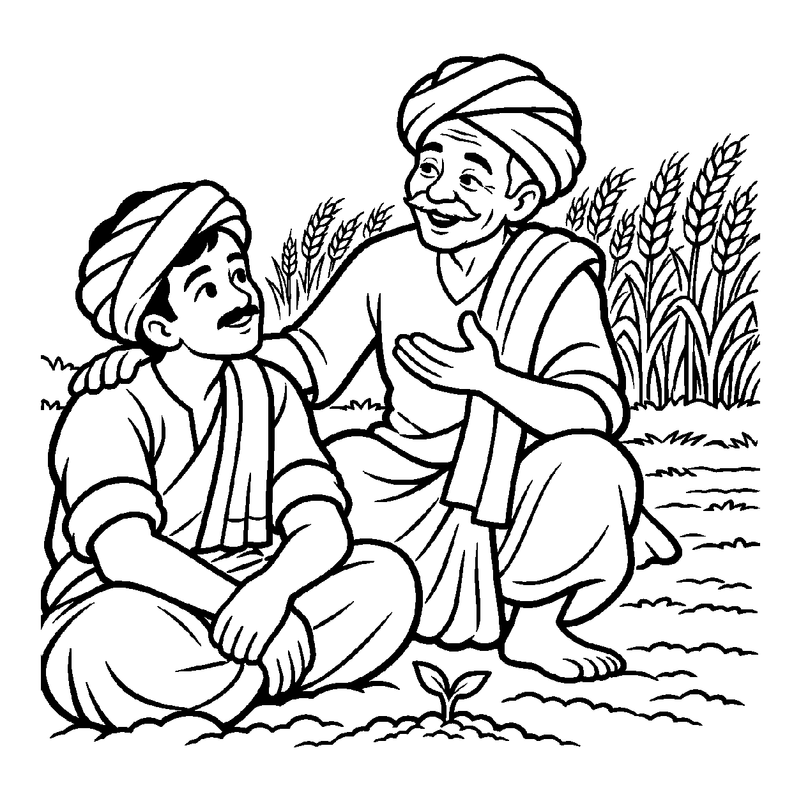

એક ઉત્સાહી માળીએ આંગણામાં આંબાનો નાનો છોડ રોપ્યો. તે રોજ સવારે અને સાંજે તેને ઘડા ભરી ભરીને પાણી પાતો હતો અને રોજ જમીન ખોદીને જોતો હતો કે ફળ ક્યારે આવશે! પરંતુ છોડ પર તાત્કાલિક કોઈ કેરી ન લાગી. જ્યારે વસંત ઋતુ આવી ત્યારે ડાળીઓ પર મંજરી ફૂટી અને જ્યારે ગ્રીષ્મ ઋતુનો તડકો તપ્યો ત્યારે જ તે મંજરીમાંથી મીઠી, સુગંધીદાર કેરીઓ પાકીને તૈયાર થઈ! સમય આવ્યા વિના ગમે તેટલા પ્રયત્નો કરવામાં આવે તો પણ વૃક્ષ ફળ આપતું નથી; પ્રત્યેક ઘટના પોતાના યોગ્ય સમયે જ પરિપક્વ થાય છે. તેવી જ રીતે આત્માના કર્મનો વિપાક હોય કે મોક્ષમાર્ગની સાધનાનું પરિણામ હોય, તે પ્રત્યેક પરિણામ પોતાના નિયત કાળે જ પાકે છે. પદાર્થની આવી સ્વકાળ-સાપેક્ષ પરિપક્વતાનું દર્શન કરાવતો દ્રષ્ટિકોણ એટલે 'કાલનય'.
સાધનામાં ઉતાવળ કે અધીરાઈ વિઘ્નરૂપ બને છે. કાલનય સાધકને પરમ ધૈર્ય શીખવે છે. જીવ જ્યારે અનુકૂળ કાળની પ્રતીક્ષા કરે છે અને યોગ્ય સમયે પુરુષાર્થ કરે છે, ત્યારે કાળલબ્ધિ પ્રગટતાં જ મુક્તિના દ્વાર ખૂલી જાય છે. કર્મની સ્થિતિ પૂર્ણ થાય ત્યારે જ તેનો ઉદય આવે છે. આ સત્ય જાણવાથી જીવ ક્યારેય નિરાશ થતો નથી.
આ નય સાધકના મનમાંથી ચિંતા અને ઉચાટ દૂર કરી સહજ પ્રતીક્ષાની શાંતિ બક્ષે છે.
સમય વગર તરુવર ફળે નહિ, ઋતુ વિના નહિ વાર;
કાલનયે સમજી લહે, સૃષ્ટિ તણો વિસ્તાર.
સ્વકાળે વિપાક પામશે, કર્મ તણો સંબંધ;
ધૈર્ય ધરી ચૈતન્ય ભજે, છૂટે ભવના બંધ.
સાધકના મનમાંથી ચિંતા અને ઉચાટ દૂર કરી સહજ પ્રતીક્ષાની શાંતિ બક્ષે છે.

ધર્મનગરના એક યુવાન ખેડૂત આનંદે પોતાના ખેતરમાં ઉત્તમ ઘઉંનું બિયારણ વાવ્યું હતું. તે ખૂબ ઉત્સાહી હતો. તેણે પહેલા જ દિવસે ખૂબ ખાતર અને પાણી આપ્યું. બીજે દિવસે સવારે તે ખેતરે પહોંચ્યો અને માટી ખોદીને જોવા લાગ્યો કે ઘઉંના દાણા કેમ નથી ઊગ્યા! ત્રીજે દિવસે તેણે ફરી માટી ખોદી. દાણા હજી અંકુરિત થતા હતા ત્યાં જ તેના હાથથી અંકુર તૂટી ગયો. આનંદ રડવા લાગ્યો: "મેં આટલી મહેનત કરી છતાં આ દાણામાંથી છોડ કેમ નથી બનતા? હું ક્યારે લહેરાતો પાક જોઈ શકીશ?" તેની અંદર અધીરાઈની ભારે અગ્નિ સળગી રહી હતી.
તે જ સમયે ગામના વૃદ્ધ અને અનુભવી કિસાન રામજી ત્યાં આવ્યા. તેમણે આનંદને રડતો જોઈને સ્નેહથી ખભા પર હાથ મૂક્યો અને કહ્યું: "આનંદ! કાલનયને ઓળખ! તારી મહેનત સાચી છે, પણ કાળની મર્યાદાને ભૂલીશ નહીં! બીજ વાવ્યા પછી તેને જમીનમાં શાંતિથી સૂવા દેવું પડે છે. યોગ્ય સમય આવશે, સૂર્યનો તાપ મળશે અને સમય પાકશે ત્યારે જ અંકુર ફૂટશે અને સોનેરી કણસલાં લહેરાશે! સમય પહેલાં તું વૃક્ષ પાસે ફળ માંગીશ તો તને માત્ર નિરાશા જ મળશે." આનંદને રહસ્ય સમજાઈ ગયું. તેણે અધીરાઈ છોડી દીધી, ખેતરને સમય આપ્યો અને થોડા મહિનાઓમાં લહેરાતો પાક જોઈ તેનું હૃદય આનંદિત થઈ ગયું. તેને સમજાયું કે જીવન અને સાધનામાં કાળનું સન્માન કરવું એ જ શાંતિનો માર્ગ છે. તેનું મન મહામૌનમાં અંતર્લીન થઈ ગયું.
જો જીવ કેવળ કાળનયને જ એકાંત સત્ય માની પુરુષાર્થ છોડી દઈ "સમય આવશે ત્યારે થશે" એમ કહી આળસમાં બેસી રહે, તો તે મોહનિદ્રામાં જ ઊંઘતો રહે છે. એક જ પાસાને પકડી રાખવાથી વસ્તુની સમગ્ર અનેકાંતમય સત્તા વિખંડિત થાય છે અને સાધક પોતાના જ એકાંગી આગ્રહના બંધનમાં ફસાઈને સાચી શાંતિ ગુમાવી બેસે છે.
આ નય પુરુષાર્થની સાથે કાળની પરિપક્વતાનો સ્વીકાર કરાવી અધીરાઈ દૂર કરે છે, જેથી સાધક પરમ વિશ્રામ પામે છે.